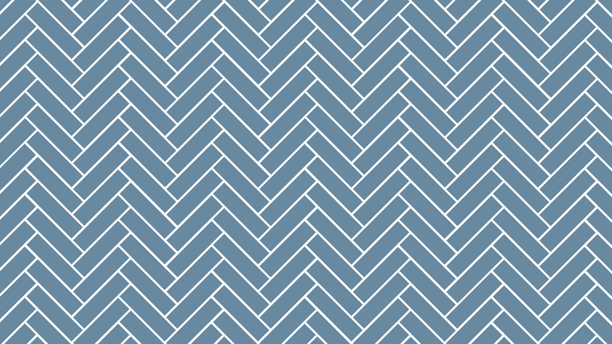
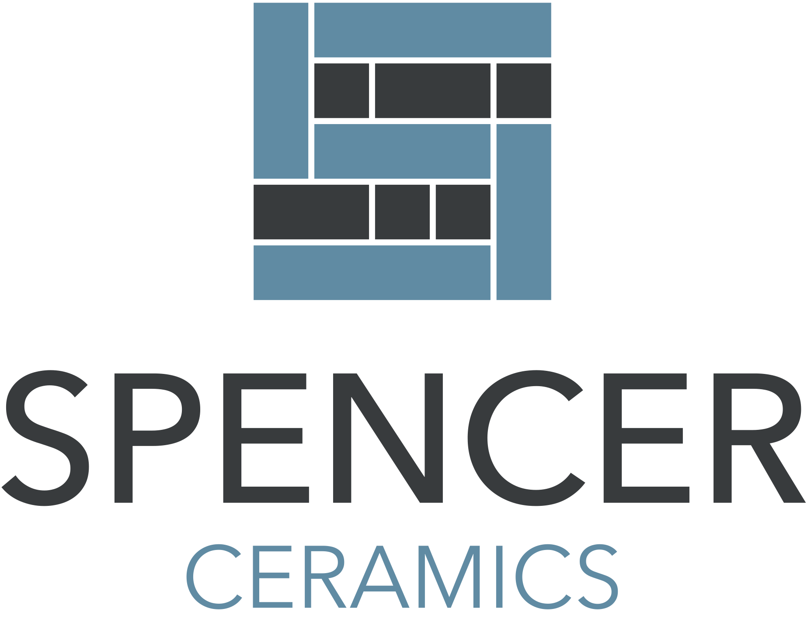

About
Spencer Ceramics
Hi, I'm Lee Spencer, the owner of Spencer Ceramics. I started this business in 2018 with a passion for delivering high-quality tiling work, and since then, I've had the pleasure of working on a wide range of projects across Northampton and beyond.
From bathrooms and kitchens to swimming pools and commercial spaces, I've tiled it all. Whether it's a small domestic house or a large-scale commercial project, I take pride in every detail, ensuring a flawless finish that stands the test of time.
I work with all types of tiles, including ceramic, porcelain, natural stone, and mosaics, and I'm always happy to offer advice on the best materials and layouts for your space. My goal is simple: to provide a professional, reliable, and hassle-free tiling service that leaves you with a result you'll love.
Owner | No.1 Employee